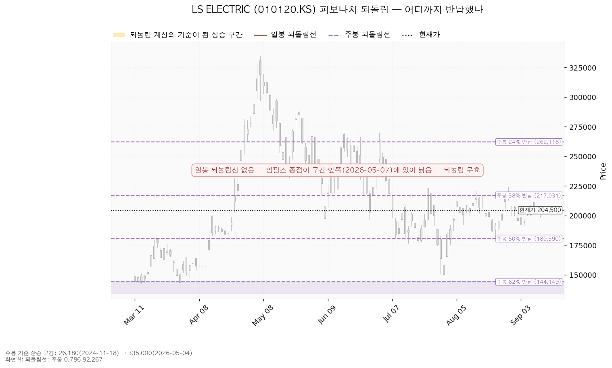
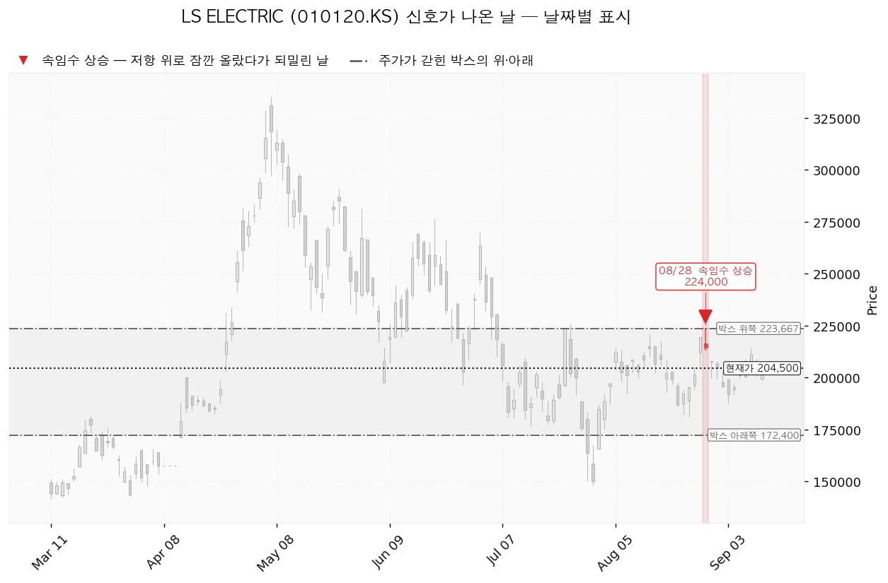
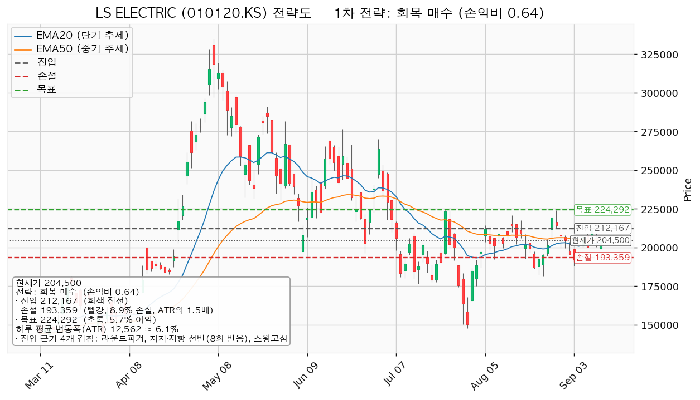
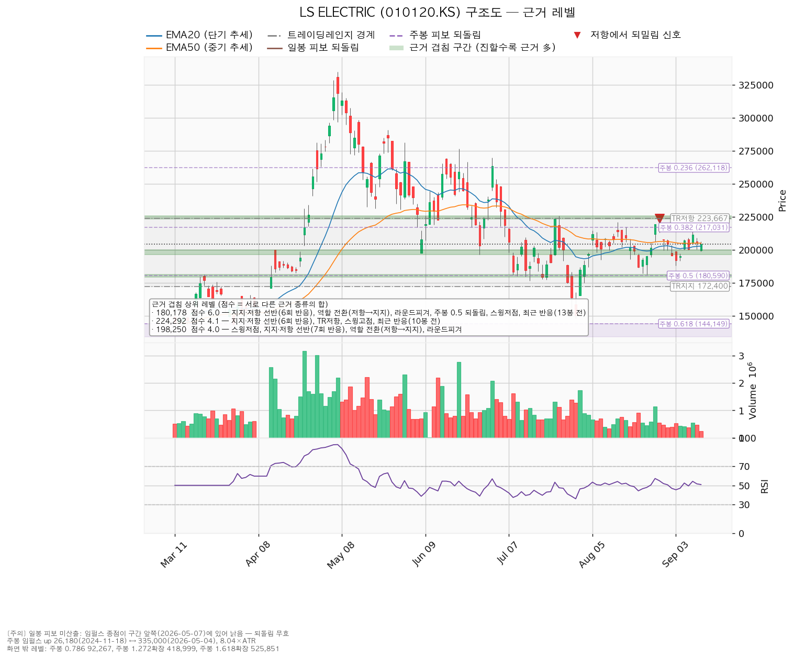

LS ELECTRIC(010120.KS)은 배전반·차단기·변압기 같은 전력기기와 전력 계통 자동화 설비를 만드는 한국 기업이며, 데이터센터·산업 설비용 전력 인프라와 해외 수출 비중이 큽니다.
| 구분 | 가격 | 판정 방식 | 현재가 대비 | 상태 |
|---|---|---|---|---|
| 회복선(신규 진입 조건) | 212,167원 | 일봉 종가로 회복한 뒤 되돌림에서 지지되는지 | +3.75% (0.61 ATR) | 회복 대기 |
| 집행 손절 | 193,359원 | 진입한 경우에만 유효 — 미진입 상태에서는 의미 없음 | -5.45% (0.89 ATR) | — |
| 관망 종료 기준 | 180,178원 | 일봉 종가 이탈 | -11.89% (1.94 ATR) | 유지 중 |
| 확인선 | 219,344원 | 일봉 종가 돌파 후 되돌림 지지 확인 | +7.26% (1.18 ATR) | 미돌파 |
| 폐기선(구조) | 172,400원 | 이탈 후 3거래일 내 회복 실패 + 반등에서 저항으로 확인 | -15.70% (2.56 ATR) | 유지 중 |
표의 'ATR'은 하루 평균 변동폭(12,562원)을 뜻하며, 레벨까지의 거리를 "평범한 하루 등락의 몇 배인지"로 환산한 값입니다.
박스 상단 223,667원은 확인선 위쪽의 맥락이며 기준선으로 쓰지 않습니다. 직전 리포트와 달리 폐기선이 현재가에서 하루 변동폭의 2.56배 아래에 있어, 이번에는 폐기선이 실제로 볼 수 있는 자리입니다.
| 직전 리포트가 건 조건 | 결과 |
|---|---|
| 회복선 — 종가 198,992원 회복 | 충족. 발행 당일인 9/7 종가 207,000원으로 넘었고, 이후 9/8 200,500원 · 9/9 211,500원 · 9/10 206,000원 · 9/11 204,500원까지 다섯 거래일 연속 종가가 위에 있습니다 |
| 목표 207,425원 (1차) | 충족. 9/7 고가 208,000원, 9/9 고가 214,000원 |
| 확인선 겸 2차 목표 214,510원 | 미충족. 9/9 고가 214,000원으로 510원 모자랐고, 종가 기준 최고치는 같은 날 211,500원이라 종가 돌파도 없었습니다 |
| 집행 손절 173,148원 | 미충족. 리포트 이후 최저 저가는 9/11의 198,700원입니다 |
| 관망 종료 179,565원 / 전량 정리 166,867원 | 둘 다 미충족. 근처까지 내려간 날이 없습니다 |
| 상단 정리 구간 222,900원 | 미충족 |
직전 결론은 "회복선을 되찾더라도 손익비가 1 아래인 한 신규 매수는 하지 않는다"였고, 장부에도 이 종목의 체결 기록이 없어 계획과 집행이 어긋난 부분은 없습니다. 다만 결과만 놓고 보면 그 판단은 진입가 198,992원에서 1차 목표 207,425원까지의 +4.24% 구간을 넘긴 것입니다. 최종 목표 214,510원은 닿지 않았으므로, 목표에서 전량 청산하는 이 리포트의 정책대로라면 그 포지션은 지금도 열려 있는 상태였을 것이고 현재가 기준으로 +2.77%입니다.
| 항목 | 2026-09-07 | 2026-09-11 | 왜 |
|---|---|---|---|
| 현재가 | 195,300원 | 204,500원 | +4.71% |
| 하루 평균 변동폭 | 13,407원 (6.86%) | 12,562원 (6.14%) | 변동이 줄어드는 중 |
| 과열·침체 온도계 | 46.97 | 50.84 | 중립 |
| 박스 | 92,533 ~ 300,833원 (180거래일 창) | 172,400 ~ 223,667원 (40거래일 창) | 박스를 판정하는 창이 180거래일에서 40거래일로 바뀌었습니다. 40거래일 창이 가격의 95.0%를 담아 세 후보(40·90·180거래일) 중 가장 잘 맞았습니다. 박스 폭도 하루 변동폭의 15.5배에서 4.08배로 좁아졌습니다 |
| 폐기선 | 92,533원 (-52.62%, 7.67 ATR) | 172,400원 (-15.70%, 2.56 ATR) | 박스가 좁아지면서 아래쪽 경계가 올라왔습니다. 직전에는 실무상 쓸 수 없다고 적었지만 이번에는 쓸 수 있는 거리입니다 |
| 회복선 | 198,992원 (겹침 5.0) | 212,167원 (겹침 3.5) | 가격이 198,992원을 이미 종가로 넘어섰기 때문에, 그 위에서 다음으로 막고 있는 자리(210,000~214,500원, 선반 8회 반응)로 올라갔습니다 |
| 확인선 | 214,510원 (겹침 4.4) | 219,344원 (겹침 3.8) | 주봉 38% 반납선 217,031원 + 라운드피겨 220,000원 + 8/28 고점 반응이 모인 자리로 이동 |
| 관망 종료 기준 | 179,565원 (겹침 6.0) | 180,178원 (겹침 6.0) | 같은 구간입니다. 8/25 저점 반응이 최근 반응으로 다시 집계되며 중심값만 613원 올라왔습니다 |
| 대표 셋업 | 진입 198,992 / 손절 173,148 / 목표 214,510, 손익비 1:0.60 | 진입 212,167 / 손절 193,359 / 목표 224,292, 손익비 1:0.64 | 진입·손절·목표가 한 칸씩 위로 올라갔고, 손절 폭은 1.93 ATR에서 1.50 ATR로 좁아졌습니다. 그런데도 손익비가 0.64에 그친 것은 진입에서 목표까지가 +5.71%(0.97 ATR)밖에 안 되기 때문입니다 |
| 박스 안쪽 판정 | 매집 우위 | 중립 | 40거래일 창 안에서는 저점이 절상이 아니라 절하이고, 상승봉 대 하락봉 거래량비도 1.22에서 1.05로 내려왔습니다 |
신규 진입 판단은 직전과 같은 패스입니다. 손익비가 0.60에서 0.64로 올랐지만 여전히 1 아래이고, 이번에도 산출된 셋업은 하나뿐입니다.
정정할 대목은 현금흐름입니다. 직전 리포트는 영업활동 현금흐름을 -29억원, 잉여현금흐름을 -1,083억원으로 적고 "현금흐름은 성격이 나쁜 쪽"이라고 판정했는데, 같은 결산 기준일(2025-12-31)·같은 설비투자 수치(2,096억원, +38.2%)로 이번에 조회한 값은 영업활동 현금흐름 +2,999억원 · 잉여현금흐름 +904억원입니다. 직전 리포트의 부호가 틀렸습니다. 따라서 "영업 단계 자체가 마이너스"라는 서술과 "10월 22일 실적에서 영업활동 현금흐름이 플러스로 돌아서는지 본다"는 확인 항목은 철회합니다. 설비투자를 38.2% 늘리고도 잉여현금흐름이 플러스인 상태이며, 이어지는 확인 항목은 그 투자가 매출·수주로 회수되는지로 바꿉니다.
| 지표 | 값 | 읽는 법 |
|---|---|---|
| 현재가 (2026-09-11 종가) | 204,500원 | — |
| 20일 평균가격선 | 202,845원 | 현재가가 위 (0.13 ATR) |
| 50일 평균가격선 | 205,146원 | 현재가가 아래 (0.05 ATR) — 두 선이 붙어 있어 방향이 없는 상태 |
| 과열·침체 온도계 (RSI 14) | 50.84 | 정확히 중립 |
| 하루 평균 변동폭 (ATR) | 12,562원 | 주가의 6.14% |
| 직전 고점 / 직전 저점 | 224,000원 (8/28) / 188,000원 (9/3) | — |
| 추세 판정 / 국면 | 하락 / 횡보 레인지(구조 유지 — 하단 사수 조건부) | — |
| 주가가 갇힌 박스 | 아래쪽 172,400원 / 위쪽 223,667원 | 유효한 박스입니다(40거래일 창, 가격의 95.0%를 이 안에서 보냄, 폭은 하루 변동폭의 4.08배) |
박스 판정에 쓴 창은 40거래일이고 조회된 전체 일봉은 729개입니다. 40거래일(가격 담은 비율 95.0%, 폭 4.08배)·90거래일(86.7%, 8.9배)·180거래일(91.1%, 16.22배) 세 창을 모두 시험해 40거래일 창이 선택됐습니다. 폭이 하루 변동폭의 4.08배라 이번 박스 경계는 단기 매매 기준으로 쓸 수 있는 거리에 있습니다.
박스 안쪽에서 무슨 일이 있었나: 박스 안 저점은 절상이 아니라 절하이고, 상승한 날의 거래량은 하락한 날의 1.05배로 사실상 같습니다. 이 두 가지 때문에 박스 안쪽은 매집도 분산도 아닌 중립으로 판정됐습니다. 가격이 이 박스로 들어온 방향은 위에서 아래입니다 — 직전 구간(208,200~279,167원)에서 아래로 내려와 이 박스에 들어왔으므로, 다시 모으는 구간인지 나눠 파는 구간인지는 아직 갈리지 않았습니다. 지지 테스트로 기록된 날은 7/21(저가 177,600원, 거래량 평소의 1.0배)과 7/30(저가 148,000원, 1.37배) 두 번뿐이라 지지 테스트 거래량의 추세는 표본 부족으로 계산되지 않았습니다.
크게 오른 구간의 상승분을 몇 % 토해냈는지로 지지·저항을 잡는 방식입니다.
주봉 기준 상승 구간: 26,180원(2024-11-18) → 335,000원(2026-05-04) (구간 높이는 하루 변동폭의 8.04배)
| 반납 비율 | 가격 | 현재가 대비 | 의미 |
|---|---|---|---|
| 24% 반납 | 262,118원 | +28.18% | 멀리 있는 저항 |
| 38% 반납 | 217,031원 | +6.13% | 확인선 219,344원을 구성하는 근거 중 하나 |
| 50% 반납 | 180,590원 | -11.69% | 관망 종료 기준 180,178원을 구성하는 근거 중 하나 |
| 62% 반납 | 144,149원 | -29.51% | 여기까지 밀리면 대세 상승분의 대부분 반납 |
현재가 204,500원은 50% 반납선과 38% 반납선 사이에 있고, 38% 반납선까지는 하루 변동폭의 1배입니다. 아래 차트에서 색이 살아 있는 부분이 되돌림 계산의 기준 구간이고 회색은 계산과 무관한 구간입니다.

| 날짜 | 신호 | 가격 | 뜻 |
|---|---|---|---|
| 2026-08-28 | 속임수 상승 | 224,000원 | 박스 위쪽 223,667원 위로 잠깐 올라섰다가 그날 종가 214,500원으로 되밀린 날입니다 |
직전 리포트에서는 신호일이 하나도 잡히지 않았는데, 박스를 판정하는 창이 40거래일로 좁아지면서 8/28 고점이 박스 위쪽 경계에 걸리게 됐습니다. 이 신호는 그 이후 가격이 박스 위쪽을 다시 시험하지 못한 이유를 설명합니다 — 9/9 고가 214,000원도 그 아래에서 멈췄습니다.

| 시나리오 | 조건 | 구조 해석 | 행동 |
|---|---|---|---|
| 상승 전환 | 212,167원 종가 회복 후 지지 → 219,344원 종가 돌파 | 속임수 하락 확인 → 강세 신호 → 되돌림 지지 → 상승 추세 진입 | 219,344원을 종가로 넘으면 그때 새 셋업으로 다시 잡습니다. 이 리포트의 셋업은 손익비 때문에 실행하지 않습니다 |
| 횡보 지속 | 172,400원을 지키며 219,344원 아래에서 박스 유지 | 구조는 유지 — 매물을 소화하는 데 시간이 필요한 국면이며 부정 신호가 아닙니다 | 신규 진입 보류. 추적 항목: ① 지지를 시험할 때마다 매도 거래량이 줄어드는지 ② 저점이 절상으로 돌아서는지 ③ 오를 때 거래량과 캔들 폭이 확대되는지. 현재 관측: 박스 안 저점 절하, 상승봉 대 하락봉 거래량비 1.05 |
| 시나리오 폐기 | 172,400원 이탈 후 3거래일 내 종가 회복 실패(또는 그 전에 종가가 159,838원 아래로 마감) + 반등에서 저항으로 확인 | 매집이 아니라 재분산 — 추가 저점 갱신 가능성을 엽니다 | 포지션 정리 후 새 구조가 만들어질 때까지 관망 |
이 시스템은 매수 방향만 산출합니다(개별 종목에 매도 셋업은 내지 않습니다). 지금은 하락·중립 국면이라 "저항선을 종가로 되찾은 뒤에만 매수로 돌아선다"는 회복 매수 하나만 나왔습니다. 박스 안쪽 판정이 중립이라 지지 확인 매수는 산출되지 않았습니다 — 저점이 절하되고 거래량비가 1.05라 매집 우위 조건을 채우지 못했기 때문입니다.
이 셋업이 대표로 뽑힌 이유: 손익비 0.64 × 구조 증명도(회복 확인형) × 진입 근거 겹침 3.5점입니다. 산출된 셋업이 하나뿐이라 손익비와 구조 증명도 사이의 선택 문제는 없었습니다.
| 항목 | 회복 매수 (유일한 셋업) |
|---|---|
| 방향 | 매수 |
| 엣지의 종류 | 모멘텀 — "저항을 종가로 되찾으면 그 방향이 이어진다"는 전제 |
| 성격 | 자주 틀리고 소수가 크게 맞는 유형. 승률을 기대하는 셋업이 아닙니다(이 유형의 일반적 성격이며, 이 분석에서 측정한 수치가 아닙니다) |
| 구조 증명도 | 회복 확인형 — 저항을 종가로 되찾은 뒤에만 들어가므로 진입가는 불리하지만 구조가 먼저 증명됩니다 |
| 진입 | 212,167원 (현재가 대비 +3.75%, 0.61 ATR 위) |
| 집행 손절 | 193,359원 — 손절 폭 18,807원 = -8.86% = 1.50 ATR |
| 손절을 그 자리에 둔 이유 | 근거 겹침 구간(196,500~200,000원, 4.0점) 바로 아래입니다. 지지 구간 안쪽이 아니라 그 아래에 두었기 때문에 손절 폭이 넓어졌고, 그만큼 손익비가 낮아졌습니다 |
| 목표 | 224,292원 (진입 대비 +5.71%) |
| 손익비 | 1:0.64 (손절 폭 1.50 ATR) — 이 손절이 이미 구조적 손절이므로 구조적 손절 기준 손익비도 같은 1:0.64입니다. 손절을 조여서 만든 숫자가 아닙니다 |
| 산출된 분할 청산 계획 | T1 219,344원 50% 익절(손익비 1:0.38) → 잔여분 손절을 진입가 212,167원으로 이동 → T2 224,292원 나머지 50%(1:0.64). 전 구간 손익비 1:0.51, T1 후 본전 스탑 기준 하한 1:0.19 |
| 집행 방식 | 진입에서 목표까지가 0.97 ATR로 2배에 못 미쳐 다단 청산·트레일링은 권하지 않습니다(이 2배 기준은 관행이지 정설은 아닙니다). 실행한다면 목표에서 전량 청산 하나뿐입니다 |
| 비중 | 1회 매매 손실 한도를 계좌의 1%로 잡으면 포지션은 계좌의 11.3% (한 종목 상한 13% 이내). 실행하지 않으므로 참고 수치입니다 |
진입 근거 4개 겹침 (점수 3.5, 구간 210,000~214,500원): 라운드피겨 210,000원 + 지지·저항 선반(8회 반응) + 스윙고점 + 최근 반응(26봉 전) 목표 근거 4개 겹침 (점수 4.1, 구간 223,500~226,000원): 지지·저항 선반(6회 반응) + 박스 위쪽 + 스윙고점 + 최근 반응(10봉 전)

이 셋업은 현재가보다 위인 212,167원에서 종가 회복을 확인한 뒤 들어가는 것이므로, 지금 가격에 따라붙어 사는 매수는 이 셋업에 해당하지 않습니다.
| 단계 | 조건 | 의미 | 행동 |
|---|---|---|---|
| ① 관찰 | 일봉 종가가 212,167원 아래로 마감 | 구조 이탈 시작 — 되돌아 올라오면 속임수 하락일 수 있어 아직 무효가 아닙니다 | 신규 진입만 중단. 집행 손절은 그대로 |
| ② 경고 | 이탈 후 3거래일 안에 212,167원을 종가로 회복하지 못함, 또는 그 전에 일봉 종가가 199,604원 아래로 마감(하루 변동폭의 1배만큼 더 밀림) — 둘 중 먼저 오는 쪽 | 저항 회복 실패 가능성이 우세해짐 | 잔여 비중 축소. 반등이 나오면 이 가격에서의 반응 확인 |
| ③ 무효 | 반등이 212,167원에서 막히고 그 아래로 되밀림 (지지가 저항으로 전환) | 구조 해석이 틀린 것으로 확정 | 포지션 정리 후 관망 |
집행 손절 193,359원은 이 판정과 무관하게 별도로 작동하며, 장중 일시 이탈은 어느 단계에도 해당하지 않습니다.
하루 평균 변동폭이 주가의 6.14%이고 손절 폭은 8.86%(1.50 ATR)이라, 하루치 등락만으로 손절이 체결되는 구조는 아닙니다. 시계는 수 주이며 손절 폭과 시계가 서로 맞습니다. 이 셋업을 넘기는 이유는 목표까지의 폭이 0.97 ATR로 짧기 때문입니다.
체결 장부에 이 종목의 매수·매도 기록이 하나도 없습니다. 기록이 없다는 것은 보유하지 않는다는 확인이 아니라 보고된 체결이 없다는 뜻이므로, 평단과 보유 수량을 지어 적지 않습니다. 직전 리포트가 인용한 평단 233,000원도 장부 기록이 아니라 8월 24일 리포트에서 이어 적은 값입니다.
보유 중이시라면 아래 선을 쓰십시오. 실제 수량·평단을 텔레그램으로 보내 주시면 다음 리포트부터 평단 대비 손익을 함께 계산합니다.
| 단계 | 가격 | 근거 (겹침) | 현재가 대비 | 할 일 |
|---|---|---|---|---|
| 위쪽 정리 1 | 219,344원 | 주봉 38% 반납, 라운드피겨 220,000원, 스윙고점, 최근 반응(10봉 전) — 3.8점 | +7.26% | 종가로 못 넘고 막히면 분할 정리 |
| 위쪽 정리 2 | 224,292원 | 선반(6회 반응), 박스 위쪽, 스윙고점, 최근 반응(10봉 전) — 4.1점 | +9.68% | 8/28 속임수 상승이 나온 자리. 잔여 정리 검토 |
| 아래쪽 1단계 | 180,178원 | 선반(6회 반응), 역할 전환(저항→지지), 라운드피겨, 주봉 50% 반납, 스윙저점, 최근 반응(13봉 전) — 6.0점, 이 문서에서 가장 두꺼움 | -11.89% | 종가 이탈 시 보유분 절반 축소 |
| 아래쪽 2단계 | 172,400원 | 박스 아래쪽, 스윙저점, 최근 반응(13봉 전) — 2.9점 구간(172,400~176,500원) | -15.70% | 종가 이탈 후 3거래일 내 회복 실패 시 전량 정리 |
| 가격 | 점수 | 겹치는 근거 | 구간 | 역할 |
|---|---|---|---|---|
| 180,178원 | 6.0 | 선반(6회 반응), 역할 전환(저항→지지), 라운드피겨, 주봉 50% 반납, 스윙저점, 최근 반응(13봉 전) | 179,550~181,200 | 지지 (관망 종료 기준) |
| 224,292원 | 4.1 | 선반(6회 반응), 박스 위쪽, 스윙고점 2곳, 최근 반응(10봉 전) | 223,500~226,000 | 저항 (셋업 목표) |
| 198,250원 | 4.0 | 스윙저점, 선반(7회 반응), 역할 전환(저항→지지), 라운드피겨 200,000원 | 196,500~200,000 | 지지 (집행 손절의 근거) |
| 219,344원 | 3.8 | 주봉 38% 반납, 라운드피겨, 스윙고점, 최근 반응(10봉 전) | 217,031~221,000 | 저항 (확인선) |
| 212,167원 | 3.5 | 라운드피겨, 선반(8회 반응), 스윙고점, 최근 반응(26봉 전) | 210,000~214,500 | 저항 (회복선 = 셋업 진입) |
| 174,450원 | 2.9 | 박스 아래쪽, 스윙저점, 최근 반응(13봉 전) | 172,400~176,500 | 지지 (폐기선 구간) |
| 189,000원 | 2.3 | 스윙저점, 라운드피겨 190,000원, 최근 반응(6봉 전) | 188,000~190,000 | 현재가 아래 첫 받침 |
| 146,075원 | 3.2 | 주봉 62% 반납, 스윙저점, 최근 반응(30봉 전) | 144,149~148,000 | 지지 (폐기선 이탈 시 다음 받침) |

| 항목 | 값 |
|---|---|
| 목표주가 (23명) | 평균 275,813원 / 최저 180,000원 / 최고 350,000원 |
| 현재가의 위치 | 204,500원 — 최저 목표 180,000원보다 위, 평균까지는 +34.87% |
| 투자의견 | 매수 |
| 후행 PER | 데이터가 제공되지 않았습니다 |
| 선행 PER | 40.28배 (내년 예상 주당순이익 5,077원 기준). 올해 예상 이익 기준으로는 57.29배 |
| 올해 예상 주당순이익 | 3,570원 (범위 3,070~3,978원), 성장률 +85.0% |
| 내년 예상 주당순이익 | 5,077원 (범위 3,521~6,222원), 성장률 +42.2% |
| 90일간 추정치 변화 | 올해 +7.3%, 내년 +16.7% — 상향 |
배수는 후행이 제공되지 않아 선행만 볼 수 있습니다. 올해 이익 기준 57.29배와 내년 이익 기준 40.28배가 벌어져 있는 것은 이익이 올해 +85.0%, 내년 +42.2% 늘어난다는 추정 때문입니다. 후행 배수가 없으므로 싸다·비싸다를 배수 하나로 단정하지 않습니다.
5월 고점 대비 하락의 성격은 배수 수축입니다. 최근 90일간 애널리스트의 이익 추정치는 올해 +7.3%, 내년 +16.7%로 올라갔는데 주가는 5월 고점 335,000원 대비 -38.96% 내려와 있습니다. 추정치가 함께 내려갔다면 사업 악화로 읽어야 하지만 방향이 반대입니다. 배수 수축은 시작도 끝도 미리 알 수 없으므로 이것이 곧 매수 근거는 아닙니다.
현금흐름은 설비투자를 늘리고도 잉여가 남는 상태입니다. 2025-12-31 결산 기준으로 영업활동 현금흐름 +2,999억원, 설비투자 2,096억원(직전 1,516억원, +38.2%), 잉여현금흐름 +904억원입니다. 영업 단계에서 현금이 나가는 유형이 아니라 투자를 앞세우고도 남는 유형이며, 확인할 것은 그 투자가 매출·수주로 회수되는 속도입니다.
상승 여력의 분해: 평균 목표주가 275,813원을 내년 예상 주당순이익 5,077원으로 나누면 54.33배입니다. 현재가는 같은 이익 기준 40.28배이므로, 목표까지의 +34.87%는 전부 배수가 40.28배에서 54.33배로 확장되는 부분에서 나옵니다. 이익 증가는 이미 내년 이익 기준 배수 안에 들어가 있고, 그 위의 상승분은 시장이 매기는 배수가 더 올라가야 성립합니다. 배수가 확장될지는 이 리포트가 쓰는 가격 기준으로는 판정할 수 없습니다.
주도주인가 — 아닙니다. 5월 고점 대비 -38.96%이고 추세 판정은 하락이며, 20일·50일 평균가격선이 202,845원과 205,146원으로 붙어 있어 방향이 없습니다. 전력기기 섹터 자체의 강도는 이 분석 범위 밖이므로, 섹터 판단이 필요하시면 시황 분석을 따로 요청해 주십시오.
시계가 다릅니다. 컨센서스 목표주가는 12개월 시계이고 이 리포트의 셋업은 수 주 시계입니다. 결론이 갈려도 모순이 아니며, 이 리포트의 답은 진입·손절·목표로 냅니다.
| 날짜 | 이벤트 | 볼 것 |
|---|---|---|
| 2026-10-22 | 3분기 실적 발표 | ① 올해 주당순이익이 컨센서스 3,570원(범위 하단 3,070원) 근처를 지키는지 ② 설비투자 증가(+38.2%)가 매출·수주 증가로 회수되고 있는지 ③ 잉여현금흐름이 플러스를 유지하는지 |
논지 무효화 (가격과 별개): 폐기선 172,400원은 현재가에서 하루 변동폭의 2.56배 아래라 이번에는 가격 기준만으로도 작동합니다. 여기에 더해 10월 22일 실적에서 ⓐ 올해 주당순이익이 컨센서스 범위 하단 3,070원 아래로 나오거나 ⓑ 90일간 이어진 추정치 상향(올해 +7.3% / 내년 +16.7%)이 하향으로 돌아서면, 가격이 어디에 있든 "하락은 배수 수축이고 사업은 훼손되지 않았다"는 이 리포트의 논지를 접습니다. 잉여현금흐름이 마이너스로 돌아서면 같은 판단을 내립니다.
*본 자료는 정보 제공 목적이며 투자 자문이 아닙니다. 최종 투자 판단과 그 결과에 대한 책임은 투자자 본인에게 있습니다.*